Jual Floor Deck Harga Murah di Tanjungbalai ☎ ??? (www.dis.or.id)
Ini membuktikan bahwa atap adalah kebutuhan primer setiap bangunan. Layaknya projek pembangunan yang magak di tengah jalan karena tidak mempunyai atap yang bisa dipakai di atasnya. Oleh karena itulah kita pastinya membutuhkan atap di setiap pembangunan. Selain atap, galvalum juga berperan sebagai kerangka atap yang gunanya adalah untuk menopang beratnya atap. Jadi simaklah baik-baik apa saja yang akan saya ulas dalam artikel berikut ini. Maka beberapa penjabaran kami dapat anda simak.
Distributor & Supplier Floor Deck (Bondex)

Floor deck atau bondek merupakan material pengganti material konvensional yang berbentuk seperti papan lebar atau triplek. Umumnya Floor Deck digunakan sebagai alas pada saat proses pembuatan lantai maupun atap dari dak beton. Produk material ini berfungsi untuk menggantikan fungsi bekisting pada saat melakukan pengecoran plat pada lantai. Selain itu, Floor Deck ini bisa dipasang pada konstruksi baja ataupun beton serta didukung dengan data perencanaan. Sedangkan untuk panjang dan juga lebarnya ada beberapa variasi.
Kini anda bisa mendapatkan floor deck Tanjungbalai dengan kualitas dan harga terbaik dengan mengunjungi dis.or.id. Disana anda bisa mendapatkan info lebih lengkap dan detail mengenai harga dan spesifikasi dari floor deck Tanjungbalai.
Info Pemesanan Selengkapnya
Google Maps: https://www.google.com/maps/d/u/0/viewer?mid=1vSGA7eD7ctB-ierGsro9yf6LdDAQHeLS&ll=-6.2537250295094555%2C106.82745&z=15
Note: https://www.facebook.com/notes/distributor-of-industrial-supply/kontraktor-jasa-floor-hardener/1783168878649658/
Event: https://www.facebook.com/events/534395173592364/
Portfolio Produk: https://www.facebook.com/1681607345472479/photos/?tab=album&album_id=1685055588460988
Distributor & Supplier Besi Beton
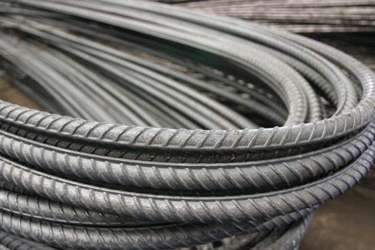
Bangunan apakah itu dalam wujud rumah atau toko harusnya menggunakan material yang kokoh dan kuat. Ada beberapa jenis material konstruksi yang ditawarkan, seperti besi beton dengan kualitas yang terbaik. Berbagai macam tipe tersebut bisa Anda gunakan untuk pembangunan. Maka dari itu anda harus selektif untuk menentukan besi beton mana yang sesuai dengan yang anda inginkan.
Anda bisa mendapatkan besi beton dengan harga yang sangat murah dan terjangkau. Karena, disan anda bisa mendapatkan besi beton yang anda inginkan yang pastinya sesuai dengan yang anda ekpetasikan.
Distributor & Supplier Steel Grating
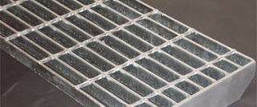
Steel grating sangat aman untuk digunakan pada beberapa kontruksi bangunan. Sehingga ketika Anda akan mencari Plat Grating bisa melakukan order pada toko bangunan penyedia barang ini. Grating ini disusun dari baja berkalit dan dilas di bagian permukaan silangnya. Karena harga murah tidak menjamin adanya kualitas yang terbaik. Grating ini bisa dirangkai plat strip besi baja dan besi ulir yang dilas pada permukaan silangnya sehingga akan membuat bangunan lebih kokoh dan kuat. Grating banyak digunakan dalam pembangunan lantai seperti deck, pabrik, tangga, industri, minyak, pertambangan, dan masih banyak lagi.
Anda bisa mendapatkan steel grating berkualitas dengan mengungjungi dis.or.id. Memesan steel grating di dis.or.id pastinya anda tidak akan merasa rugi.
Distributor & Supplier Pipa (Hitam/Gas, Galvanis)
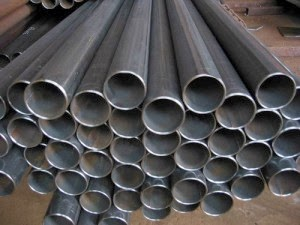
Manfaat dari pipa hitam galvanis memang banyak sekali untuk kebutuhan konstruksi bangunan. Pipa hitam gas galvanis memiliki kekuatan yang tidak dapat diragukan, bagian luar pipa juga telah terlapis stainless steel sehingga menjadikannya tahan korosi. Pipa hitam gas galvanis banyak digunakan untuk keperluan area pertambangan minyak gas, untuk itu banyak juga yang mengira pipa hitam ini adalah pipa gas. Karena telah terlapis dengan material stainless steel pipa ini jadi tahan karat dan korosi, sehingga dapat anda aplikasikan untuk segala kondisi cuaca di Indonesia. Tentukan kebutuhan pipa hitam anda pada kami, tersedia ukuran ½ inc sampai 40 inc. Anda dapat mengkonsultasikan keperluan pipa hitam tersebut pada kami dan mengetahui informasi harganya lebih detail.
Distributor & Supplier Kawat Bronjong/Gabion

Kawat bronjong berfungsi sebagai pencegah erosi. Kawat ini juga ada yang berbahan galvanis. Gunanya agar kawat tidak karat. Kawat bronjong biasa dilapis oleh galvanis yaitu suatu lapisan anti karat agar kawat dapat tahan lama dan tidak gampang berkarat. Kawat bronjong ini juga bisa berfungsi sebagai pengaut tebing miring di mana di atas tebing tersebut mungkin terdapat bangunan atau jalan.
Jika anda saat ini sedang membutuhkan kawat bronjong, anda bisa langsunng mengunjungi dis.or.id. Jika anda tengah membutuhkna kawat ini, anda bisa saja langsung mengunjungi dis.or.id. Tak hanya itu, kawat bronjong yang disediakn juga terdapat bermacam ukuran.
Distributor & Supplier WF H-beam
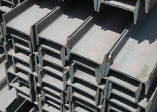
Saat ini, jenis besi WF memang banyak dicari. Kekuatan yang dimiliki oleh besi ini memang terbukti kuat dan sangat tinggi. selain itu, besi ini ternyata memiliki kualitas yang terjamin sehingga tidak diragukan lagi. Di samping itu, besi ini juga mempunyai sisi padat yang bagus.
Kini anda bisa mendapatkan besi WF dengan kualitas terbaik dan mutu terjamin. Disana anda bisa mendapatkan besi tersebut dengan kualitas terbaik serta harga yang sangat terjangkau. Pastinya dengan harga yang sangat terjangkau.
Distributor & Supplier Expanded Metal
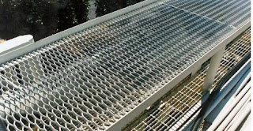
Expanded metal ini merupakan lembaran baja yang berbentuk jala yang memiliki lubang-lubang yang homogen serta sangat pas jika dimanfaatkan untuk berbagai aplikasi selain pagar BRC. Umumnya penggunaan dari Expended Metal ini adalah untuk walkway atau catwalk, anak tangga pada tower serta banyak juga digunakan di dermaga/konstruksi lepas pantai/pertambangan. Sedangkan untuk keunggulannya sendiri adalah memiliki bentuk yang indah dan juga homogen, lebih vareatif dalam hal pengaplikasiannya, relatif lebih ringan, dan lebih mudah dipasang.
Kini anda bisa membeli expanded metal yang anda inginkan dengan mengunjungi dis.or.id. Disana terdapat berbagai informasi mengenai expanded metal yang anda butuhkan.
Distributor & Supplier Plat (Hitam, Kapal, Bordes, Strip)

Material Plate kapal padadasarnya dilihat dari segi penampakan Fisiknya sama dengan plat hitam mempunyai warna yang hitam akan tetapi,ada perbedaan dari ukuran dimensi dan kandungan kimianya dikarenakan fungsinya dan aplikasinya yang berbeda. Plat besi bordes juga dikenal dengan checkered plate. Harga plat besi bordes, strip dan plat besi lainnya sangat terjangkau per meter persegi. Sebenarnya bila anda pernah melihat triplek, maka seperti itu lah plat besi hitam hanya saja terbuat dari besi. Plat besi memang ada yang tipis dan tebal, perihal ukuran ini akan kita sampaikan secara detail pada topik yang berbeda.
Anda bisa mendapatkan plat hitam, plat kapal, plat bordes dan plat strip dengan mengunjungi situs dis.or.id. Dis.or.id menjual plat besi dengan harga terjangkau, banyak ukuran ataupun dapat menyesuaikan ukuran yang anda minta. Tak perlu khawatir harga, karena harga yang di patok pastinya sangat murah dan terjangkau.
Distributor & Supplier Atap Galvalum

Dengan semakin panasnya bumi, maka di ruangan pun masih terasa suhu panas.
Ada yang menjual per m2 tapi ada pula yang menjual dengan sistem lembaran. Atap galvalum memang menjadi salah satu incaran atap saat ini dikarenakan galvalum dinilai banyak orang lebih efektif jika dibandingkan dengan galvanis.
Besar kecilnya galvalum tergantung pada kebutuhan anda. Ini adalah kekeliruan besar, atap galvalum berbeda dengan atap seng. Ada pula tanggapan yang mengatakan bahwa atap galvalum itu panas dan juga berisik. Penggunaan galvalum terbilang lebih efektif bila dibandingkan dengan galvanis. Karena galvalum mempunyai daya tahan karat 4x dari galvanis.
Distributor & Supplier Atap Lengkung
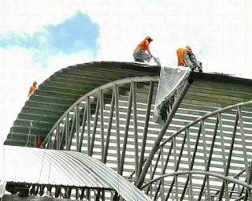
Bagian yang berfungsi sebagai pelindung bagi pengguna dan isi bangunan dari panas, hujan dan berbagai macam cuaca adalah atap. Baik atap tersebut terbuat dari besi, aluminium, galvalum, zincalum kayu dsb. Masing-masing atap mempunyai keunggulan dan kelemahan sendiri.
Bentuk dari setiap atap tersebut sangat beragam. Salah satu jenisnya adalah atap lengkung. Salah satunya juga harus kuat menahan derasnya air hujan.
Atap lengkung biasa dapat anda temukan pada bangunan-bangunan yang dibuat untuk keperluan olahraga. Salah satunya adalah pada stadion bola maupun kolam renang. Atap dengan kualitas baik adalah atap yang kuat menahannya derasnya iklim dan cuaca. Bila anda tertarik untuk mempunyai atap lengkung pada bangunan anda maka janganlah ragu. Maka anda akan mendapatkan penawaran dengan harga terjangkau. Cukup hubungi kontak yang tertera pada dis.or.id dan dapatkan harga terjangkau untuk anda.
Distributor & Supplier Truss Canal C
Sudah tahukah anda apa yang dimaksud dengan galvalum? Galvalum memang istilah yang kerap kali kita dengar dan umumnya memang sangat erat kaitannya dengan baja. Rayap tentunya tidak dapat menggerogoti besi yang satu ini. Dengan penggabungan galvalum dengan besi kanal c maka sebuah bangunan bisa menjadi lebih kuat dan berkualitas. Galvalum memang kerap dijodohkan dengan kanal c, ini dikarenakan keduanya yang saling melengkapi. Jadi dengan kata lain, besi kanal C ini bisa dikatakan multi fungsi. Mencari kanal c galvalum berkualitas dengan harga murah? Maka dis.or.id adalah jawaban tepat untuk anda.
Distributor & Supplier Hollow Galvalum
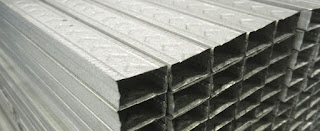
Hollow Galvalum adalah bahan material bangunan yang terbuat dari logam dan bersifat anti karat. Namun, untuk mendapatkan hollow galvalum ini anda tidak perlu repot untuk mencarinya.
Karena hollow galvalum ini dapat ditemukan di toko bangunan khusus yang keberadaannya juga sudah menjamur. Rumah rumah masa kini, sudah banyak yang menggunakan rangka jenis hollow untuk pembuatan plafonnya. Dengan banyaknya cabang supplier kami dapat menjangkau pengiriman sampai ke pelosok Indonesia. Kami menjual Hollow galvalum berkualitas, anti korosi, dan juga jaminan tahan lama. Kami akan mengirim barang pesanan anda sampai pada tujuan dengan aman, cepat dan tepat tujuan.
Distributor & Supplier Seng Gelombang

Apakah anda hendak mendirikan bangunan baru? Sebuah bangunan dapat berdiri tegak kokoh dan bernilai bukan cuman karena dinding dan permukaan lantainya saja. Ia lebih mudah di pasang dan harga jual yang ekonomis dipasaran membuat seng gelombang memiliki banyak peminat. Andapun wajib memperhatikan bagaimana atap bagian bangunan tersebut apakah berkualitas ataukah tidak, atap dengan kualitas rendah akan beresiko kerusakan maupun kebocoran yang pasti merugikan seisi bangunan ruangan tersebut. Ia lebih mudah di pasang dan harga jual yang ekonomis dipasaran membuat seng gelombang memiliki banyak peminat. Pemasangan seng pada atap rumah haruslah dibantu dengan kerangka kayu, atau bisa juga anda memanfaatkan kerangka galvalum yang kini sudah bermunculan di masyarakat dan lebih unggul di banding kerangka kayu sendiri.
Seng gelombang sekarang ini diburu banyak masyarakat untuk menutup bagian atap bangunan mereka. Seng gelombang dengan warna ataupun transparan amatlah awet bila dibandingkan dengan bahan pembuat atap lainnya.
Distributor & Supplier Plat Seng
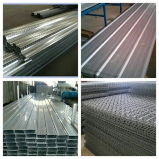
Plat seng dan plat galvalum banyak digunakan untuk berbagai kebutuhan, dari kebutuhan pembangunan rumah, industri, pabrik dan berbagai kegunaan lainnya. Anda dapat memilih lebaran atau per meter sesuai dengan fungsinya.
Harga plat galvanis lembaran dan per meter juga berbeda beda. Selain lebih hemat, juga anda tidak harus membuang bagian yang tersisa. Silakan kunjungi dis.or.id, situs tentang distributor industri ini memuat banyak sekali manfaat untuk anda.
Sebuah rumah tidak akan bisa disebut rumah jika dalam komponen nya tidak ada atap nya. Oleh karena itu, peran atap pada sebuah rumah sangatlah penting.
Distributor & Supplier Genteng Metal

Kami memiliki stock genteng multiroof, rainbow dan sakura roof terlengkap. Genteng metal adalah genteng yang terbuat dari campuran dari bahan bahan yang terbuat dari logam, seperti zinc, baja ringan dan galvanis. Secara sederhana genteng metal adalah salah satu jenis genteng yang terbuar dari kumpulan berbagai bahan logam dan memiliki ciri kas mengkilat, ringan dan tahan lama. Genteng metal pasir adalah genteng yang memiliki bobot yang ringan tetapi memilki kekuatan yang tinggi sehingga genteng metal pasir adalah genteng yang memilki kualitas yang terbaik dibandingkan dengan genteng metal lainnya. Kami dapat menjamin genteng metal yang kami jual adalah produk yang berkualitas. Jika anda masih agu lagi, kami sarankan untuk anda untuk mengubungi kami secara langsung.
kami berusaha mencari kepuasan pelanggan kami.
Distributor & Supplier Besi Wiremesh

Besi wiremesh merupakan besi lembaran panjang yang disusun rapi sampai membentuk anyaman. Banyak orang yang menganggap wiremesh ini dengan sebutan besi anyam. Struktur anyam dari besi wiremesh sendiri juga bermacam-macam, anda bisa sesuaikan dengan kebutuhan apakah struktur anyam kotak atau yang jajar genjang. Untuk kepentingan konstruksi, besi wiremesh diaplikasikan untuk keperluan anak tangga, plat lantai, dan penguat dak beton. Untuk bangunan bertingkat besi wiremesh yang digunakan adalah ukuran 8 sampai 10. Besi wiremesh diproduksi dengan sistem las otomatis sehingga hasilnya rapi dan jaraknya teratur. Bagi anda yang membutuhkan besi wiremesh, kini dapat memesan pada kami!
Distributor & Supplier Pagar BRC
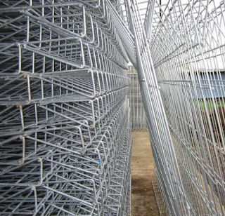
Pagar beton merupakan pagar yang dibuat dari material beton dimana ia memiliki diameter ketebalan 5 mm – 8 mm, tentu saja anda bisa memesan kebutuhan pagar BRC ini sesuai dengan kebutuhan. Setiap potongan besi tersebut kemudian digabungkan dengan bantuan mesin las wiremesh. Pagar BRC termasuk dalam kategori pagar yang siap pasang untuk melindungi berbagai bentuk bangunan anda. Kekuatan pagar BRC sebagai pagar pelindung sangat bisa diandalkan, karena ia diproduksi dengan tegangan ijin 2900 kg/cm2 sehingga kekuatannya mencapai 2,5 kali lipat dari jenis biasa. 5 kali dari kekuatan besi biasa.
Distributor & Supplier Kawat Loket, Kawat Harmonika
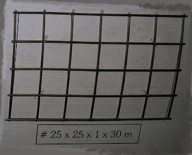
Kawat loket harmonika sangat cocok bila anda aplikasikan untuk kebutuhan kawat pagar, penyekat, penutup jendela, dan kebutuhan sejenis lainnya. Pemanfaatan kawat loket harmonika dalam kehidupan sehari-hari sangat banyak, selain untuk industri konstruksi banyak keperluan rumah yang memanfaatkan jenis kawat ini. Apalagi bila anda membeli jenis kawat loket harmonika yang sudah terlapisi dengan galvanis sehingga ia awet dan tahan terhadap korosi. Sebagai distributor besi baja terlengkap di Indonesia, kami menawarkan produk kawat loket ini untuk anda, dengan diameter 1,5 mm – 4mm dengan ukuran lubang 20 mm – 70 mm. Anda bisa memesan kawat loket harmonika ini sesuai dengan kebutuhan, kami dapat menerima pesanan dengan lebar maks 3 meter dan panjang yg tak terhingga. Kami dapat menerima segala kebutuhan kawat harmonika anda dengan maksimal ukuran lebar sampai 3 meter.
Distributor & Supplier CNP & UNP
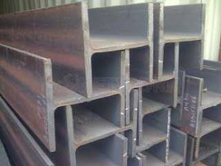
Besi UNP merupakan besi kanal yang melengkung dan membentuk huruf U, pengaplikasian besi ini sendiri biasanya pada sambungan atau dudukan atap. Selain dimanfaatkan untuk kebutuhan tersebut, besi UNP cocok di gunakan untuk keperluan penutup dinding / girts. Jika dilihat secara mendetail, anda pasti membayangkan bahwa spesifikasi dari besi UNP sendiri hampir mirip dengan besi WF. Sedangkan untuk besi CNP sendiri lebih banyak digunakan pada dinding cladding atau gording. Untuk bentuknya sendiri besi CNP memiliki bentuk yang melengkung dan membentuk huruf C, untuk itulah kenapa banyak orang yang menyebutnya sebagai besi profil C. Anda tak hanya bisa manfaatkan untuk kebutuhan konstruksi saja, bahkan untuk kebutuhan otomotif sekalipun.
Distributor & Supplier Besi Siku
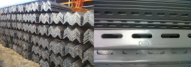
Setiap konstruksi bangunan pasti menggunakan material konstruksi besi siku ini untuk kebutuhan bagunan. Besi siku sangat dapat diandalkan untuk kebutuhan sebagai besi penyangga. Dengan bentuk kedua sisinya yang tegak lurus, anda bisa manfaatkan besi ini untuk keperluan rumah tangga ataupun furniture. Ukuran panjang dari besi siku yang kami sediakan adalah panjang 6 meter, dan ketebalan yang bisa anda sesuaikan dengan kebutuhan. Untuk kebutuhan material besi siku selengkapnya anda dapat menghubungi kami! Kami menawarkan produk besi siku yang kuat dengan berbagai ukuran. Anda dapat manfaatkan produk besi siku dari perusahaan kami untuk keperluan industi, otomotif, bangunan, furnitur, konstruksi dan sebagainya. Kunjungi website kami di www.dis.or.id atau menghubungi kontak yang tersedia.
Distributor & Supplier Hollow (Hitam, Galvanil, Galvanis)
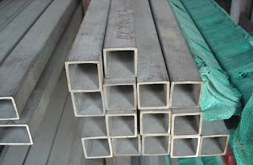
Sekarang ini besi hollow pemanfaatannya sudah melebihi kayu, meskipun terbuat dari besi kualitasnya pun tidak dapat diragukan lagi.Sekarang sudah banyak orang yang beralih pemanfaatan dari kayu menjadi menggunakan besi hollow.Banyak orang yang mulai beralih dari pemanfaatannya yang menggunakan kayu beralih pada hollow hitam galvanil.Besi hollow saat ini menjadi material pengganti kayu yang sangat baik. Dengan menggunakan material ini pembangunan konstruksi juga bisa selesai lebih cepat sehingga meminimalkan upah pekerja. Dis.or.id pun telah menyediakan produk besi hollow hitam galvanis ini untuk dapat anda pesan langsung! Tersedia ukuran besi hollow 40 x 40 x 2 mm x 6 Meter, 50 x 50 x 3 mm x 6 Meter hingga ukuran 150 x 150 x 5 mm x 6 meter dan masih banyak lagi. Terdapat besi hollow dengan berbagai ukuran yang bisa anda pesan langsung, misalnya: ukuran besi hollow 40 x 40 x 2 mm x 6 Meter, 50 x 50 x 3 mm x 6 meter hingga ukuran 150 x 150 x 5 mm x 6 meter.Segera hubungi kontak kami untuk info lebih lanjut. anda dapat memesan besi hollow hitam galvanil galvanis tersebut dengan berbagai ukuran, baik ukuran besi hollow 40 x 40 x 2 mm x 6 Meter, 50 x 50 x 3 mm x 6 meter sampai dengan ukuran 150 x 150 x 5 mm x 6 meter. Kami menyediakan besi hollow hitam dengan ukuran 40, 50, 150 dan lain sebagainya dengan panjang rata-rata 6 meter. Untuk anda yang membutuhkan besi ini, kami menyediakan ukuran besi hollow yang variatif 40 x 40 x 2 mm x 6 Meter, 50 x 50 x 3 mm x 6 meterr sampai dengan ukuran 150 x 150 x 5 mm x 6 meter. Besi hollow bisa dimanfaatkan untuk berbagai keperluan, misalnya seperti pagar, pintu besi, teralis, dan masih banyak lagi. Jika anda tertarik memesan besi hollow ini maka tentukan dulu total kebutuhan anda, hubungi kami segera untuk info lebih lanjut!Selain sebagai pengganti material kayu, besi hollow yang kami jual dapat anda manfaatkan untuk kepentingan teralis, pintu besi, pagar, dan lain sebagainya.Bagi anda yang membutuhkan besi hollow, anda dapat menghubungi kami, besi hollow yang kami tawarkan cocok untuk kebutuhan pagar, pintu besi, teralis, dan lain sebagainya.Selain sebagai pengganti material kayu, besi hollow banyak dimanfaatkan untuk kebutuhan pintu besi dan teralis. Untuk itu hubungi kontak kami segera!
Distributor & Supplier Pipa Pancang
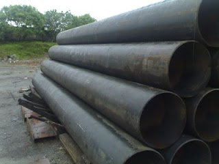
Produk pertama industri DIS adalah pipa pancang. Sedangkan dari namanya saja tetu sudah sangat familiar dengan konstruksi yang satu ini. Terutama bagi Anda yang sedang membangun proyek di atas permukaan laut, tentu saja ini akan sangat membantu. Nah, pipa ini sendiri memiliki berbagai ukuran maupun spesifikasi lainnya. Di sini Anda aka mendapatkan pipa dengan kualitas terbaik dan mutu terjamin. Dengan demikian, ketika di gunakan pun bisa semakin maksimal. Sedangkan untuk kualitas pipa pun akan sangat terjamin dengan mutu terbaik.
Jasa Pondasi Bor (Strouss/Borepile)
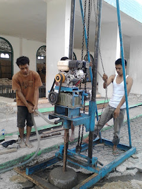
Ketika melakukan proyek pembangunan rumah sendiri, kualitas yang baik hingga dalam hal pengeboran pondasi pun akan menjadi hal yang di harapkan. Nah, jika Anda bingung terkait hal itu, kini ada banyak jasa yang bisa menjadi jalan keluar Anda dalam pelayanan pondasi bor. Terkait jasanya tidak perlu jauh-jauh karena di sini Anda bisa menemukan pemesanan yang mudah. Di sini jasa pondasi bor melayani pengeboran yang mana hasil dan kualitasnya terjamin. Akan tetapi, perlu di ketahui pula kalau selama proses pengeboran tersebut akan ada suara bising yang cukup mengganggu sekalipun tidak menimbulkan getar. Berbicara lebih dalam tentang pengeboran, tersedia dua jenis yang bisa Anda pilih. Yakni pengeboran manual atau yang otomatis dengan menggunakan mesin. Sebenarnya, jika selain Anda menggunakan jasa pengeboran, Anda pun bisa membeli mesin bor sendiri. sedangkan dari segi kualitas pun keduanya tidak jauh berbeda.
Distributor & Supplier Genset (New/Second)
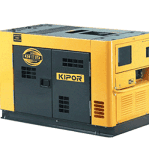
Genset atau generator set yang menghasilkan tenaga listrik kini telah banyak di gunakan sebagai alternatif. genset ini merupaka produk yang menggunakan bahan bakar solar sehingga bisa menghasilkan tenaga listrik. Sedangkan dalam pembeliannya, Anda bisa memilih antara genset baru atau pun yang second. Dan keduanya pun bisa Anda dapatkan di DIS.
Dalam masalah harga, tentu saja memang genset di jual dengan cukup mahal. Akan tetapi, jika menginginkan kualitas terpercaya, maka bisa juga memilih membeli yang masih baru saja. Bagaimana tidak, jika kualitas yang di tawarkan saja hampir sama sedangkan harganya lebih rendah. Namun yang membelinya dalam kondisi baru pun juga banyak untuk penggunaan lebih maksimal.
Distributor & Supplier UPS
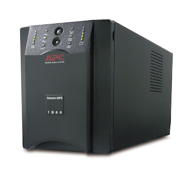
Untuk alat elektronik yang satu ini, biasanya memang belum cukup terkenal kecuali untuk dunia elektro. Hanya saja, yang tidak mengetahui nya pu juga cukup banyak. Sedangkan UPS sendiri merupakan sebuah alat elektronik yang mampu akan menjadi sumber listrik pengganti sementara jika sumber utamanya terputus. Terutama bagi para pengguna komputer yang tergantung terhadap enegi listrik. Sedangkan dari jenisnya, UPS cukup variatif. Baik dari segi kualitas maupun kapasitas yang di milikinya. Terkait akan penjualan pun, di sini DIS menyediakan UPS juga dengan kualitas yang sangat memadai bagi Anda. Untuk tingkat ketahanan nya pun juga cukup tinggi sehingga bisa lebih menguntungkan.
Distributor & Supplier Forklift (Second)

Dalam setiap industri, baik itu industri kecil, menengah, hingga yang besar, tentu saja akan banyak yang menggunakan forklif. oleh karena itu penjualan forklif pun banyak di mana-mana termasuk di sini. Termasuk jika ingin yang bekasnya pun di sini ada. sedangkan dari sisi kualitas barang yang di tawarkan di sini, jangan khawatir karena tentu saja akan sangat memuaskan. Nah, kalau di DIS sendiri Anda akan banyak menemukan barangnya dengan kualitas bagus sekalipun second. Nah, dengan kualitas yang bagus ini, maka forklif akan membuat aktivitas industri Anda menjadi lebih mudah dalam berbagai hal. Apalagi, di sini yang di tawarkan adalah forklif yang siap pakai. Sedangkan yang lebih menguntungkan lagi darinya adalah, ketika Anda sudah tidak memerlukannya, maka bisa di jal kembali pada distributor forklif.
Jasa Pembuatan Moulding Inject
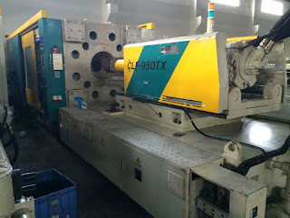
Anda sedang bingung untuk membuat plastik yang tepat sebagai wadah salah satu produk Anda, maka jangan khawatir karena banyak jasa yang bisa di manfaatkan untuk pembuatannya termasuk di DIS. solusi tersebut adalah dengan memilih jasa pembuatan moulding inject seperti yang di tawarkan DIS. Di sini, Anda bisa mendapatkan moulding inject dengan kuantitas tanpa batas. Tidak hanya terbatas pada kuantitas, akan tetapi, juga kualitas moulding inject ini sangatlah terjamin mutunya. Anda tidak perlu khawatir terkait hal itu karena moulding inject yang di hasilkan pun juga merupakan kualitas yang terbaik.
Jasa Pembuatan Sparepart Mesin Produksi / Alat Berat

Dalam dunia permesinan, sparepart tentu saja merupakan salah satu komponen penting yang perlu di perhatikan. terkait akan hal itu, bisa di akui pula bahwa pembuatan mesin ini sangat penting untuk menjadi perhatian. salah satunya seperti yang di tawarkan di DIS. Terkait dengan hal itu, perlu Anda ketahui bahwa pembuatan sparepart yang salah, bisa jadi akan membahayakan si pengguna. Hal inilah yang membuatnya harus di produksi oleh jasa terpercaya sehingga akan semakin aman. Semakin baik spesifikasi nya, tentu akan semakin mahal. Jadi berapa harga dalam pembuatan setiap satuannya tergantung pada bagaimana spesifikasi yang di miliki.
Jasa Service Elektronik (Kompor Gas, Dispenser, Mesin Cuci)
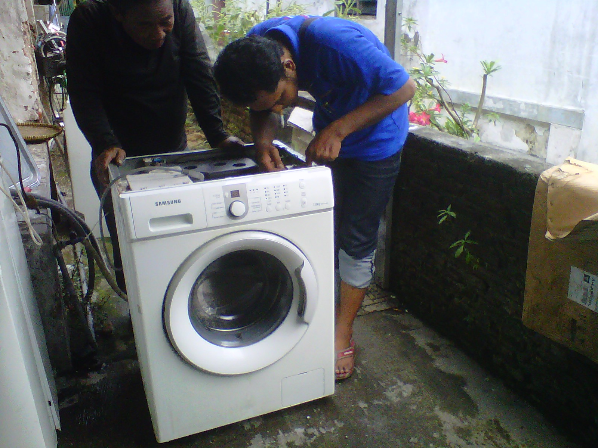
Kini elektronik memang semakin banyak di gunakan di kalangan masyarakat. mengimbangi akan hal itu, jasa service pun juga kian menyebar di mana-mana. Sedangkan di industri DIS pun Anda juga bisa mendapatkan jasa tersebut. Industri DIS sendiri juga menyediakan jasa sedemikian rupa. dengan demikian Anda kan semakin di untung kan sekaligus mendapatkan nilai ekonomis nya karena tidak harus berganti barang baru. Sedangkan service elektronik ini sendiri, sebenarnya tidak harus saat barang Anda rusak saja. Hanya saja kebanyakan orang memang melakukan service elektronik saat ada keluhan yang di rasakan saja.
Sudahkah anda mengetahui arti penting dari sebuah komponen bernama atap? Keberadannya amat penting bukan? Bahkan bisa disebut kebutuhan primer setiap bangunan. Tidak terbatas pada bangunan, beberapa jenis atap yang telah saya sebutkan diatas mampu dipakai bahkan tanpa bangunan sekalipun. Atap memang adalah kebutuhan primer bagi setiap bangunan. Sehingga dapat memunculkan kalimat tiada bangunan tak beratap. Jadi bila anda tertarik dalam mencari berbagai jenis atap dan bingung dalam memilih.